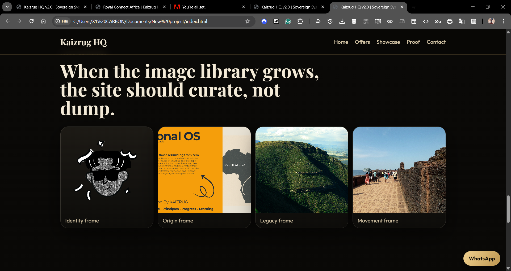
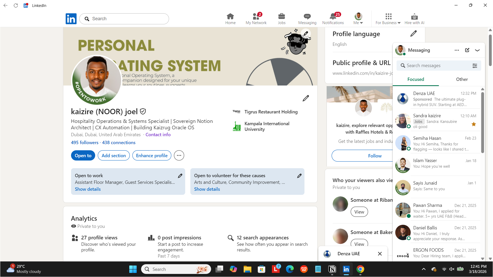
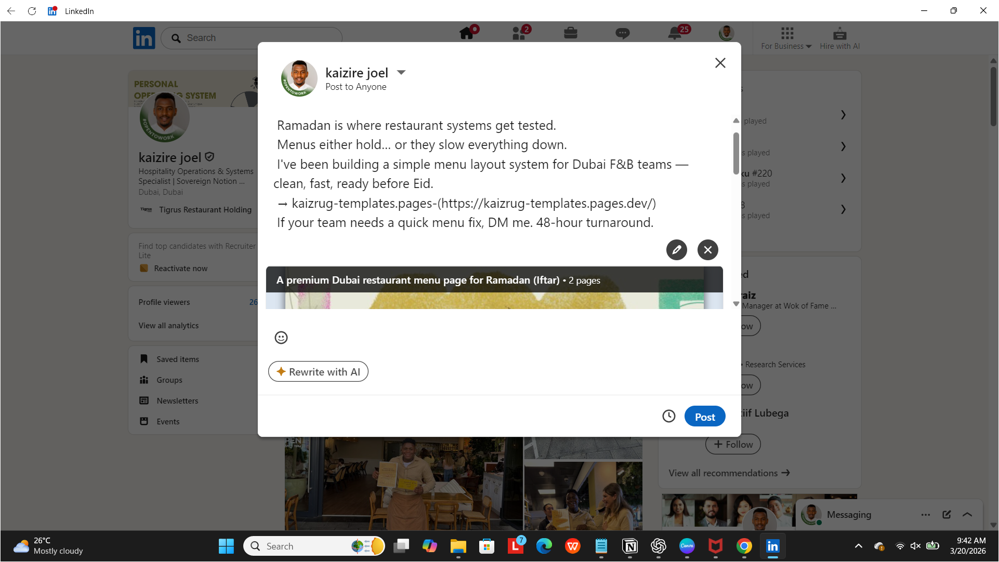
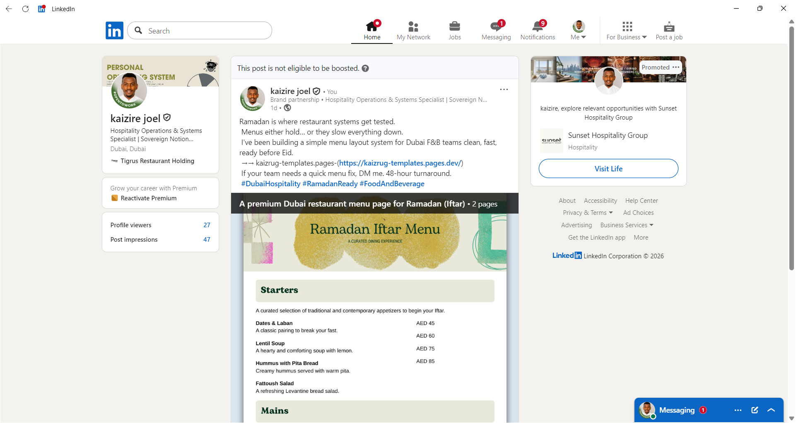

KX-PUB-01 | Live | v2.0
Build the Kingdom. Prove it works. Then open the gates.
Joel Kaizire, known as Kaizrug, is a Ugandan systems architect and hospitality professional in Dubai. This HQ is built for operators, partners, and sponsors who respect proof, precision, and execution.
Move quiet. Build loud. Leave legacy.
Website Model
A site like yours should feel like a digital handshake.
Not just a brochure. Not just a portfolio. It should introduce the person, show the work, prove the movement, and make the next action feel natural.
Featured Sponsor Banner
Premium collaboration slots for sponsored campaigns.
Collapsible Offer Groups
User-first pathways by need, not jargon.
Brand Showcase
Logos, channels, and platforms already in motion.

Legacy Horizon
Visual language for a brand built from journey, geography, and vision.
Royal Connect Africa
Tourism, exports, and digital trust corridor.
Kaizrug Mark
Recognizable identity with personality.
Media Carousel
Story-first visuals for campaigns and partner decks.
Selected Frames
When the image library grows, the site should curate, not dump.
Validation Snapshot
Verified public footprint checked on April 14, 2026.




GitHub Footprint (latest public pushes)
- rca-sites - pushed March 16, 2026
- kaizrug-cv - pushed March 16, 2026
- portflio-edition - pushed March 16, 2026
Contact and Partnerships
For brand collaborations, sponsored content, and product alliances.
Results first. Framework second. Reach out where you move fastest.